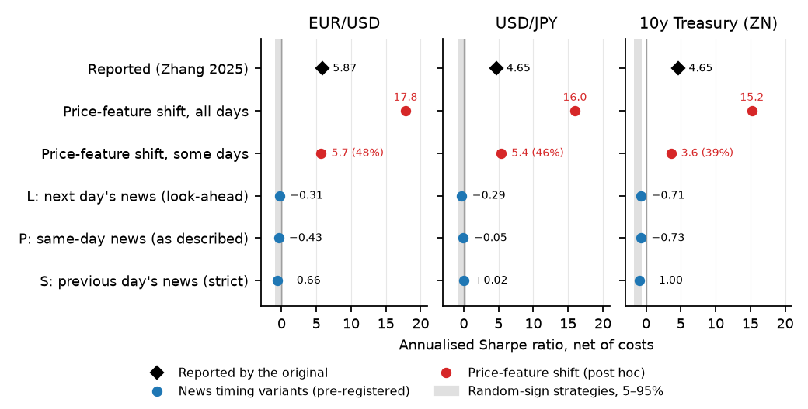
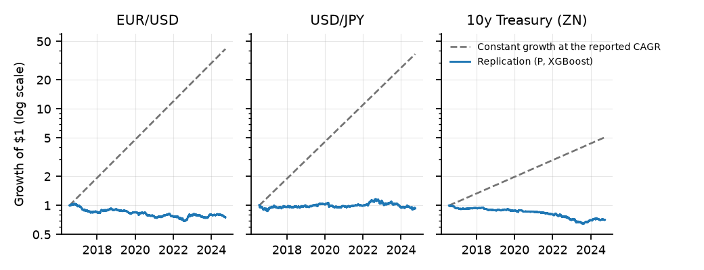

P
Paper timing
Feeds the model the news dated the same day, as the paper describes.
PRE-REGISTERED · VERDICT RULES FIXED BEFORE ANY RESULT
FinBERT sentiment of GDELT headlines, an XGBoost classifier, three assets, the paper's own filters and costs. Every one of 18 combinations fails, with win rates near a coin flip.
SAVED RESULTS From the repo's results/ folder; nothing runs in your browser. This page makes no claim about why the original numbers arose. Limits and sources
PaperReplication
XGBoost under the timing the paper describes (variant P), pooled out of sample from mid-2016 to September 2024, net of costs. The paper reports 5.87 (EUR/USD), 4.65 (USD/JPY) and 4.65 (10-year Treasury futures).
Paper figures are as reported (Sharpe and win rate, Table 1 of the paper). Replication figures are from results/F1_results.csv. The one-sided p-value is a 21-day block bootstrap.
Three assets, three timing variants and two models. Filter, then compare each Sharpe with the paper's and with random trading. P feeds the model the news dated the same day, as the paper describes; S uses only news published before the close; L feeds it the next day's news, a deliberate look-ahead.
XGBoostLogisticPaper, reportedTick: random-sign p95
Select a dot for detail.
Sharpe is annualised on the pooled out-of-sample daily returns. "Random-sign p95" is the 95th percentile of 20 random-sign strategies on the same days at identical costs. Where the twins are negative (ZN), frequent position changes at 0.05% per round trip are costly.
The replication's XGBoost strategy under the paper's timing, net of costs, on a log scale. The dashed line is constant growth at the paper's reported CAGR over the same dates, drawn for scale only; it is not the original's equity curve.
The pre-registered hypothesis was that the reported performance came from timing: the described method would fail while a one-day look-ahead would reproduce it. The data rejected the second half. Variant L, which sees a full day of future news, also earns nothing.


Not pre-registered, and not a claim about what the original code did. The original code was not available for comparison, so nothing here shows how its results arose. This is an illustration of magnitude: if the lagged-return feature were shifted by a single row, so that it equalled the next day's return (the target), the same pipeline would learn it directly.
Re-running variant P with only that change gives Sharpe ratios of (EUR/USD), (USD/JPY) and (ZN), with win rates of 91 to 98%, as saved in the daily-returns file. Applying the shift to only a share of days gives numbers of the reported order (5.7, 5.4 and 3.6, per the replication paper's Figure 1). It shows how a one-line error of that kind produces figures of this size, whereas no treatment of the news timing does. Other possible causes could only be assessed with the original code.
Each asset and model is run under three news timings. If leakage explained the paper, L would succeed where P and S fail.
P
Paper timing
Feeds the model the news dated the same day, as the paper describes.
S
Strict
Uses only news published before the close.
L
Deliberate look-ahead
Feeds the model the next day's news, to show what leakage would look like.
Events and headlines
GDELT 1.0 daily exports, 2015 to October 2024. Event codes 100-199, top 100 per day. Headlines come from article URL slugs; on the 389 of 1,000 sampled links that still had a live title, slug and title FinBERT scores correlate 0.66.
Features and models
FinBERT polarity, daily aggregates, lags, moving averages and the lagged return. Logistic regression and XGBoost under a five-fold expanding-window split. Long if the predicted probability exceeds 0.5, otherwise short, with the paper's costs.
Pre-registered verdicts
Replicated if variant P has Sharpe of at least 2 on two of three assets. Not replicated, explained by leakage, if P is below 1 everywhere and L at least 2 on two assets. Not replicated, unexplained, if P is below 1 everywhere and L below 2. Outcome: the third.
The full design, committed before any sentiment or model result existed, is in preregistration/PREREGISTRATION.md. An independent replication, Andrews (2026, SSRN 6426038), also found no predictive power, on EUR/USD and other assets. This one adds USD/JPY and 10-year Treasury futures with the paper's event filter, and a direct test of news timing.
Saved results, read-only: every number and figure on this page comes from the repo's results/ folder and paper/ figures. Code, pre-registration, FinBERT scores and results: github.com/coderback/zhang2025-replication (MIT licence for code). Original paper: Zhang (2025), arXiv:2505.16136. GDELT data is subject to the GDELT Project's terms; FinBERT is ProsusAI/finbert. Raw GDELT data and prices are not redistributed here.